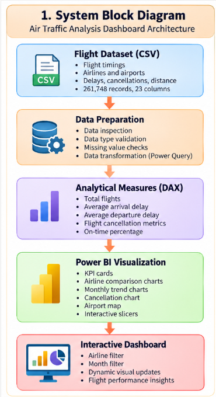
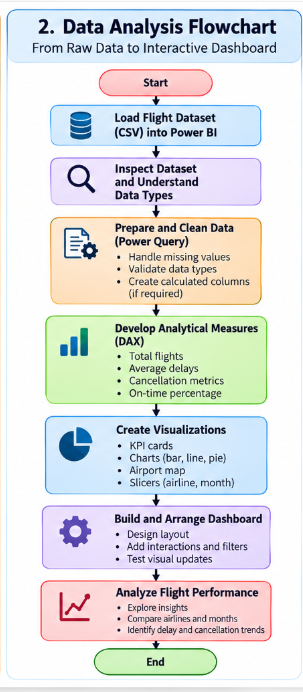
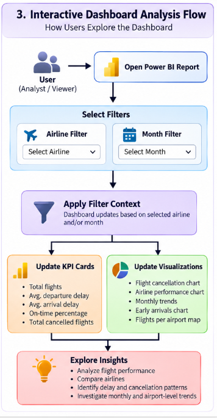

Air Traffic Analysis · Project walkthrough
Dashboard flow diagrams
Follow the dashboard architecture, the data-to-report workflow, and the way users explore filtered flight-performance views.
← Back to Air Traffic Analysis project details01 · REPORT ARCHITECTURE
System block diagram

02 · DATA WORKFLOW
Data analysis flowchart

03 · USER EXPLORATION
Interactive dashboard analysis flow

On-time performance depends on the measure definition used in the Power BI report.